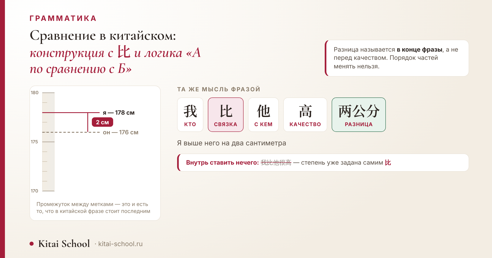
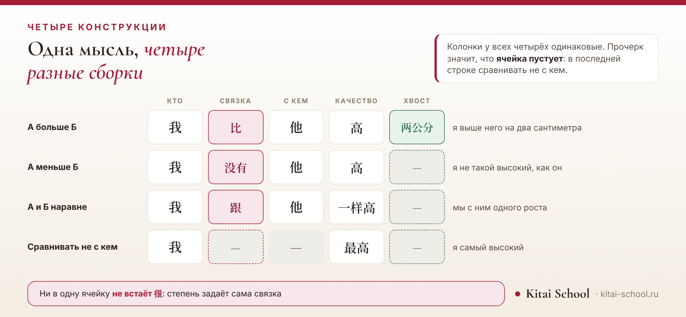

Письменность и грамматика
Сравнение в китайском: конструкция с 比 и логика «А по сравнению с Б»


Вы хотите сказать «я выше него». Находите «высокий» — 高, находите «более» — и вот тут начинается самое интересное: отдельного слова «более», которое можно было бы приставить к 高, в китайском нет. Вместо него работает конструкция, и порядок частей в ней менять нельзя.
Схема такая: А 比 Б плюс качество. 我比他高 — «я выше него». Внутрь этой конструкции не ставится 很, а величина разницы называется в самом конце: 我比他高两公分. Для отрицания берут 没有, для равенства — 跟…一样.
Короткий ответ: отдельной формы слова нет
В русском «высокий» превращается в «выше» само слово: меняется окончание, и значение «более» появляется внутри него.
В китайском прилагательное не меняется вовсе. 高 остаётся 高 и в «он высокий», и в «он выше меня».
Значение «более» даёт не слово, а конструкция. Берутся два предмета, между ними ставится 比, и качество называется после них: 我比他高. Дословно — «я по сравнению с ним высокий».
Отсюда и главная трудность темы. Русскую фразу нельзя перевести по словам: придётся сначала разобрать её на части и собрать заново в другом порядке.
Базовая модель: А 比 Б плюс качество
Запомнить нужно одну заготовку, в которую подставляются слова.
- 我比他高 — «я выше него».
- 今天比昨天冷 — «сегодня холоднее, чем вчера».
- 这个比那个贵 — «этот дороже того».
Обратите внимание на порядок: сначала оба предмета, и только потом качество. По-русски привычнее наоборот — «выше, чем он», — и именно эту привычку приходится переучивать.
Качество ставится в самом конце и ничем не украшается. Ни «очень», ни «довольно», ни «весьма» в него не добавляются — дальше объясню, почему.
Если нужно усилить, берут 更 «ещё более» или 还 «ещё»: 今天比昨天还冷. Оба ставятся после второго предмета и перед качеством, то есть внутрь конструкции, а не перед 比.
Почему нельзя сказать 我比他很高
Это ошибка номер один, и делают её практически все.
Логика понятная: «очень высокий» — 很高, значит «намного выше него» — 比他很高. По-русски сходится. По-китайски — нет.
Причина в том, что степень уже задана самим 比. Конструкция сравнения говорит «больше, чем», и добавлять к ней «очень» некуда: место занято.
Верно просто 我比他高. А если нужно сказать именно «намного выше», для этого есть свой способ — и он работает не перед качеством, а после него.
Та же участь ждёт и остальные наречия степени: 非常 «чрезвычайно», 太 «слишком», 有点儿 «немного». Ни одно из них внутрь конструкции не встаёт.
Проверить себя можно так. Если во фразе есть 比, то перед качеством не стоит ничего, кроме 更 или 还. Всё остальное, что хочется туда поставить, на самом деле относится к концу фразы.
Четыре конструкции сравнения: сводка
Прежде чем идти дальше, посмотрим на все четыре рядом.
| Что говорим | кто | связка | с кем | качество | хвост | Перевод |
|---|---|---|---|---|---|---|
| А больше Б | 我 | 比 | 他 | 高 | 两公分 | я выше него на два сантиметра |
| А меньше Б | 我 | 没有 | 他 | 高 | — | я не такой высокий, как он |
| А и Б наравне | 我 | 跟 | 他 | 一样高 | — | мы с ним одного роста |
| Сравнивать не с кем | 我 | — | — | 最高 | — | я самый высокий |
Прочерк значит, что ячейка пустует. В последней строке таких ячеек две: сравнивать там не с кем.

Посмотрите на колонку «кто»: она одна и та же во всех четырёх. И на «качество» — оно тоже на своём месте везде.
Меняются связка и хвост. Этого достаточно, чтобы фраза значила «больше», «меньше», «столько же» или «больше всех».
Как назвать разницу
Вот то самое «намного», которому не нашлось места перед качеством.
Разница называется после качества, и годится сюда и точная величина, и приблизительная.
- 我比他高两公分 — «я выше него на два сантиметра». Точная величина.
- 我比他高一点儿 — «я немного выше него».
- 我比他高得多 и 我比他高多了 — «я намного выше него».
По-русски такая добавка обычно стоит в середине фразы: «на два сантиметра выше». По-китайски она всегда в конце, и переставить её нельзя.
Это и есть причина, по которой конструкцию стоит запоминать целиком, а не собирать из слов по словарю.
Спрашивают про разницу так же, как и отвечают, — вопросительное слово встаёт на её место: 你比他高多少, «насколько ты выше него». Ответ тогда получается простой подстановкой: 我比他高两公分.
Ученик готовился к собеседованию и собирал фразу про опыт работы.
По-русски она звучала так: «я работаю в этой сфере дольше, чем он». По-китайски у него вышло 我比他工作很长时间.
Разобрали по частям. Первое, что ушло, — 很: в конструкции с 比 ему нет места, степень задаёт сама связка.
Второе — порядок. Величина разницы встала после качества, а не перед ним. Получилось 我比他工作的时间长.
Самое полезное выяснилось в конце. Он собирал фразу по словам: «я» плюс «по сравнению» плюс «он» плюс «очень» плюс «долго». Каждое слово по отдельности было верным, а вместе они не складывались.
С тех пор я даю эту конструкцию целиком, как одну заготовку с пустыми местами, а не как набор слов.
Случай показательный: каждое слово по отдельности было верным. Не сошлась именно сборка.
Отрицание: 没有 и что не так с 不比
Здесь есть тонкость, о которой стоит знать заранее.
Для простого отрицания берут 没有: А 没有 Б плюс качество. 我没有他高 — «я не такой высокий, как он».
Если нужно усилить, добавляют 那么: 我没有他那么高 — «я не настолько высокий, как он».
Обратите внимание: отрицание встаёт вместо связки, а не перед качеством. Сказать 我比他不高 нельзя.
А теперь честно про 不比. Такая форма существует, но у неё другой оттенок: это возражение на чужое утверждение, примерно как русское «да не выше он меня». Часть разборов описывает её именно так, другие приводят 不比 как обычное отрицание. Единой трактовки я не нашла — поэтому говорю прямо: источники здесь расходятся, и на первых порах надёжнее 没有.
Одинаково: 跟…一样
Третий случай — когда предметы равны.
Схема: А 跟 Б 一样 плюс качество. 我跟他一样高 — «мы с ним одного роста», дословно «я с ним одинаково высокий».
Вместо 跟 может стоять 和, и значение не изменится: разница между ними только в речи, 跟 разговорнее.
Частая ошибка — вставить 的: 一样的高. Здесь оно не нужно, 一样 встаёт прямо перед качеством.
Отрицается эта конструкция через 不 перед 一样: 我跟他不一样高 — «мы с ним разного роста».
Качество после 一样 можно и не называть, если и так понятно, о чём речь: 我的书跟你的一样 — «моя книга такая же, как твоя». Тогда фраза говорит об одинаковости вообще, а не по одному признаку.
更 и 最: степень без второго предмета
Бывает, что сравнивать не с кем, а степень назвать нужно.
更 — «ещё более». Оно предполагает, что с чем-то сравниваем, но этого второго в фразе может и не быть: 这个更贵 — «этот ещё дороже».
最 — «самый». Здесь второго предмета нет вовсе: сравнение идёт со всеми сразу. 我最高 — «я самый высокий».
Оба ставятся прямо перед качеством и в конструкцию с 比 не входят — это отдельный способ.
Разница между ними в том, с чем идёт сравнение. 更 оставляет второй предмет за кадром: его либо назвали раньше, либо он понятен из разговора. 最 не предполагает второго предмета вовсе — сравнение идёт со всем кругом, о котором речь.
На письме это особенно заметно. В описаниях товаров, в меню, в рекламных строчках 最 встречается постоянно: оно короче любой развёрнутой конструкции и не требует называть, с чем сравнивают.
Отдельно отмечу 比较: несмотря на знак 比 внутри, это не конструкция сравнения, а наречие степени со значением «довольно, сравнительно». Его место в предложении разобрано у нас отдельно: наречия в китайском.
Частые ошибки русскоязычных
Разберём их парами: слева собранное по русской привычке, справа — то, что скажет носитель.
| Собранное по привычке | Как говорят | В чём дело |
|---|---|---|
| 我比他很高 | 我比他高 | 很 внутрь конструкции не ставится: степень уже задана самим 比. |
| 我比他两公分高 | 我比他高两公分 | Разница называется после качества, а не перед ним. |
| 我不比他高 | 我没有他高 | Для простого «не такой высокий, как он» берут 没有. У 不比 другой оттенок — возражение на чужое утверждение. |
| 我和他一样的高 | 我跟他一样高 | В конструкции равенства 的 не нужно: 一样 встаёт прямо перед качеством. |
| 我是比他高 | 我比他高 | Связка 是 здесь лишняя: сравнение строится без неё. |
Четыре из пяти — ошибки порядка, а не слов. Слова взяты верные, но поставлены туда, где по-русски привычнее.
Пятая стоит особняком: лишнее 是 появляется потому, что по-русски в сравнении слышится «я есть выше». В китайской конструкции сказуемым работает само качество, и связка ему не нужна.
Поэтому и работать с темой проще не через правила, а через заготовку: собрать десяток своих фраз по одной схеме, а потом менять в ней связку. Общая схема китайской фразы, в которую эта заготовка встраивается, разобрана отдельно: как составлять предложения на китайском.
Чего в статье нет намеренно
- Нет разбора 比较 как наречия степени — он у соседей, здесь только отсылка.
- Нет темы оттенков цвета и сравнения вроде «этот синее того»: это разобрано в статье про синий цвет.
- Нет разбора пословицы 远亲不如近邻 — она у «Пословиц»; саму конструкцию 不如 «уступает» я только называю.
- Нет единой трактовки 不比: источники расходятся, и выбирать за них я не стала.
- Нет утверждений о том, какая конструкция встречается чаще: корпусных подсчётов по этим формам я не нашла.
- Нет терминов чужих ремёсел — о форме слова и конструкции говорю обычными словами.
И главный вывод. Сравнение в китайском — это не форма слова, а порядок, и запоминать его надо целиком, вместе с тем, что стоит в конце.
Польза простая: собрав по этой схеме десяток фраз, вы перестанете переставлять части местами — а именно на перестановках и ломается большинство попыток сказать «выше», «дешевле» или «быстрее».
Конструкции такого рода ставятся на занятиях за пару уроков — важно только отработать их на собственных фразах: онлайн-курсы китайского. Оставить заявку или написать нам в Telegram.
Частые вопросы (FAQ)
Как сказать «выше» или «больше» по-китайски?
Отдельной формы слова для этого нет. Вместо «выше» строится конструкция: А 比 Б плюс качество. 我比他高 — «я выше него», буквально «я по сравнению с ним высокий». Само прилагательное при этом не меняется: 高 остаётся 高, а значение «более» даёт связка 比.
Почему нельзя сказать 我比他很高?
Потому что 很 и другие наречия степени в эту конструкцию не ставятся: степень уже задана самим 比. Верно просто 我比他高. Если нужно усилить, берут 更 или 还, и ставят их после 比 Б, перед качеством: 今天比昨天还冷 — «сегодня ещё холоднее, чем вчера».
Как указать, на сколько именно А больше Б?
Величина называется после качества, а не перед ним. 我比他高两公分 — «я выше него на два сантиметра». Так же ставятся и приблизительные величины: 高一点儿 — «немного выше», 高得多 и 高多了 — «намного выше». В русском такая добавка обычно идёт в середине фразы, в китайском — всегда в конце.
Как сказать, что А меньше Б?
Через 没有: А 没有 Б плюс качество. 我没有他高 — «я не такой высокий, как он». Можно усилить через 那么: 我没有他那么高 — «я не настолько высокий, как он». Обратите внимание, что отрицание ставится не перед качеством, а вместо связки.
Чем 不比 отличается от 没有?
Для простого отрицания берут 没有. У 不比 оттенок другой: это возражение на чужое утверждение, примерно как русское «да не выше он меня». Здесь разборы расходятся: часть источников описывает 不比 именно как возражение, другие приводят его как обычное отрицание. Поэтому на первых порах надёжнее 没有.
Как сказать «одинаково»?
Через 跟…一样: А 跟 Б 一样 плюс качество. 我跟他一样高 — «мы с ним одного роста». Вместо 跟 может стоять 和, разница между ними только в речи: 跟 разговорнее. Частица 的 перед качеством здесь не нужна.
Пусть части встают на свои места с первого раза! 加油！
Источники
- Базовая модель А 比 Б плюс качество и жёсткий порядок частей — по разборам китайской грамматики.
- Запрет на 很 внутри конструкции — оттуда же: степень задана самой связкой, и это прямо названо ошибкой.
- Место 更 и 还 — после второго предмета и перед качеством; пример 今天比昨天还冷 по тем же разборам.
- Величина разницы после качества — 一点儿, 得多, 多了 и точные величины — по тем же источникам.
- Отрицание через 没有 и усиление через 那么 — оттуда же.
- Про 不比 источники расходятся: большинство описывает его как возражение на чужое утверждение, отдельные разборы — как простое отрицание. Расхождение названо в тексте, единая трактовка не приводится.
- Равенство через 跟…一样 и отрицание через 不一样 — по разборам грамматики.
- Сопоставления частоты этих конструкций в статье нет: корпусных подсчётов найти не удалось.
- Случай с собеседованием — из занятий Kitai School; имени и названия компании не называю.